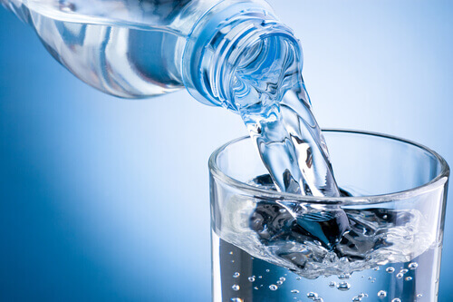
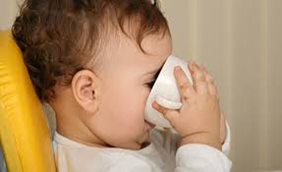

Пиття дитини на грудному вигодовуванні

Чи потрібно дитині давати воду або іншу рідину (чаї, компоти), на виключно грудному вигодовуванні до 6 місяців? Це питання стало дуже актуальним з приходом літньої спеки. Спробуємо розібратися.
ВООЗ рекомендує виключно грудне вигодовування до 6 місяців. Чому ж ВООЗ такі категоричні? Дослідження говорять, що допоювання водою збільшує ризик виникнення діареї і недоїдання. Діти, які отримують воду, частіше хворіють на кишково-шлункові захворювання, так як мама, не завжди може бути впевнена в якості води, якою вона допоює. Вода заповнює шлунок дитини, це зменшує частоту прикладань, і дитина не отримує необхідної кількості грудного молока.
Ця рекомендація стосується абсолютно всіх дітей, навіть тих, які проживають в країнах з жарким кліматом. Таке дослідження було проведене на Ямайці.
Грудне молоко на 88% складається з води. Тому додаткова рідина не потрібна, грудне молоко універсальне. Мами з досвідом розповідають, що коли діти прикладаються часто і на кілька хвилин, вони п’ють, коли прикладаються на довший час - вони їдять.

Протокол МОЗ України “Про догляд за здоровою новонародженою дитиною до 3-х років” рекомендує:
“Дитина віком до 6 місяців повинна отримувати тільки грудне молоко, немає фізіологічної потреби у введенні в її раціон додаткової рідини у вигляді води, чаїв (чорного, зеленого або трав’яного), соків, відварів тощо”.
Відвари чи настої трав на основі кропу, ромашки, фенхелю, який ще й нейротоксичний, не мають доказової бази в лікуванні чи полегшення стану при коліках чи здутті у немовлят.
Але тоді коли? Об’єктивні причини для введення додаткової рідини до 6 місяців, поряд з грудним молоком:
- потреба в додатковій рідині при інфекційних захворюваннях, при ознаках зневоднення 1 ступеня (це розчини для оральної регідратації, тільки за призначенням лікаря);
- лікарські форми, які слід розводити водою, життєво необхідні дитині і не мають альтернативної заміни;
Після 6 місяців діти можуть потребувати додаткової рідини. Не можна давати дистильовану, газовану і мінеральну воду. Не рекомендується давати дитині будь-які види чаю (трав’яного чи чорного) до 2-х років, так як він містить речовини, які перешкоджають всмоктуванню заліза. Не рекомендується запивати їжу.
Після 6 місяців дитину слід вчити пити з чашки.
Статтю редагувала: Олена Павлига
Література: